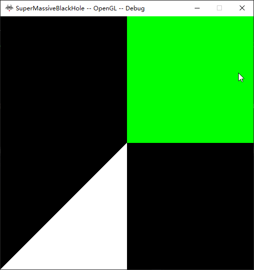
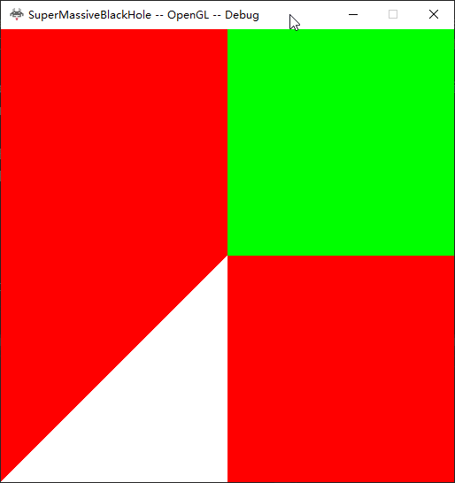
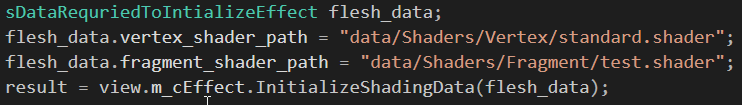
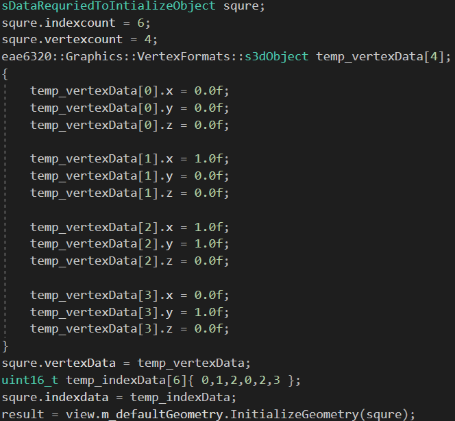

Assignment3
In this assignment, we extract an interface for graphics.
Right now all the data were located in the graphics project in graphics.CPP file
We already separated the object which contains the vertex information and effect which contains the shaders. There are codes that belong to neither of them hence I created a class View which contain the rest codes, such as initialized background-color, manage the context, etc. Currently, all effects, objects, and views are static variables located in graphics.CPP.
I changed the interface on the object and effect to initialize them by data, and I add migrated other platform-dependent codes to View class and add an interface to initialize the clear color.
Application

Clear backbuffer color
application with red backgroud

The User needs to provide a vertex data array, an index data array and their size to initialized an object. However, On both platform, only the size of the index array is needed to store. The data takes 24 bytes on directX(x64) and 20 bytes on OpenGl(win32), This number could be smaller by organize the memeber variables in a differen order
Code Initalize Effect

Code Initalize Object
The User needs to provide addresses to the vertex shader and fragment shader to initialize an effect. On both platform, none of the addresses are stored. The data takes 24 bytes on directX(x64) and 16 bytes on OpenGl(win32), Again This number could be smaller by organize the memeber variables in a differen order

Random thoughts
The idea behind having different projects is to add constraints to us and make each part of the engine independent from each other. Such as Application and graphics. Theoretically, the only thing application project should know is the public interfaces of the graphics project, which is currently located in graphics.h. However, later we need to add some struct to transfer information from Application to Graphics. Such As the "sDataRequiredToInitializeOjbect" struct, which I used to transfer information about the vertex.
The problem would be where should we define these structs. You could define it where it is used. Mine "sDataRequiredToInitializeOjbect" is currently defined in Object class which uses this struct to build Object. However, From the separation and adding constrains point of view. The Application should not know about the interface of Object class. because it is the implementation details of graphics, which application should not care.
Well, then maybe we should define these structs in graphics.h file, which would work with some careful forward declarations. The forward declarations could be needed since the object class is part of the graphics application, which is used by graphics.CPP. However, It is kind of wired for lower-level implementation to know the public interfaces of the system. Well, it is even weirder to have two .cpp files each includes the other's .h file. Hence, maybe there should be separated .h files that contain those structs. Or, we could have the graphics.h acts as only the interface which gives all its jobs to another class which implements the highest level of abstraction of graphics applications.
Haha, That is how I implemented the graphics system. Several advantages exist in having this class instead of having the highest level of graphics implemented directly in graphics.CPP. Firstly, the code could be more clear, since you can have all functions and variables declared in .h file. The other advantages would be it might be easier to change the implementations of graphics. Besides, you could instantiate the class, which might not be important here. There might be other advantages that I could not think of right now.
Oh, Besides, I wonder what is the advantages of having static variables that having those variables as member variables and use singleton implementation?
RedBackGround_win32.zip
RedBackGround_x64